Success by conversion path
PHP WordPress blocks
79/81
PHP HTML
79/81
Haskell Pandoc HTML
69/81
Faithful enough diff checks
These checks compare generated outputs against Haskell Pandoc when available, or PHP HTML as a fallback baseline. Text scores compare normalized visible words. Visual-structure scores compare the rendered document shape: headings, paragraphs, lists, tables, images, figures, captions, code, quotes, and math.
Text
Faithful enough
31
Needs review
13
Divergent or empty
103
Visual structure
Faithful enough
87
Needs review
29
Divergent or empty
31
Import quality gates
These checks evaluate the WordPress block output as an import artifact: visible text completeness, heading/list/table/image counts, paragraph merge or split drift, media extraction diagnostics, local anchor validity, and Custom HTML block share.
Pass
7
Review
11
Fail
63
| Sample | Status | Gate summary |
|---|---|---|
Pandoc bibliography fixturebibtex | fail | 5 pass, 2 review, 3 fail |
Averroes bibliography fixturebibtex | fail | 5 pass, 2 review, 3 fail |
BibLaTeX-style bibliographybiblatex | fail | 5 pass, 2 review, 3 fail |
Online entry samplebiblatex | fail | 5 pass, 2 review, 3 fail |
BITS book fragmentbits | fail | 9 pass, 0 review, 1 fail |
BITS section fragmentbits | fail | 9 pass, 0 review, 1 fail |
CSL JSON book itemcsljson | fail | 5 pass, 2 review, 3 fail |
CSL JSON article itemcsljson | fail | 5 pass, 2 review, 3 fail |
Format status CSVcsv | fail | 8 pass, 0 review, 2 fail |
RST CSV table datacsv | fail | 8 pass, 0 review, 2 fail |
Format status TSVtsv | fail | 8 pass, 0 review, 2 fail |
Source status TSVtsv | fail | 8 pass, 0 review, 2 fail |
DocBook article sampledocbook | fail | 7 pass, 1 review, 2 fail |
DocBook table sampledocbook | fail | 9 pass, 0 review, 1 fail |
DOCX headersdocx | fail | 9 pass, 0 review, 1 fail |
DOCX tablesdocx | fail | 8 pass, 1 review, 1 fail |
DOCX footnotes and endnotesdocx | fail | 8 pass, 1 review, 1 fail |
DOCX inline imagesdocx | fail | 7 pass, 1 review, 2 fail |
OASIS KMIP specification DOCXdocx | fail | 8 pass, 1 review, 1 fail |
EndNote XML reader fixtureendnotexml | fail | 5 pass, 2 review, 3 fail |
EndNote XML book recordendnotexml | fail | 5 pass, 2 review, 3 fail |
The Waste Land EPUBepub | review | 9 pass, 1 review, 0 fail |
EPUB feature coverageepub | fail | 8 pass, 1 review, 1 fail |
EPUB 2 picture bookepub | fail | 6 pass, 0 review, 4 fail |
EPUB image coverageepub | fail | 7 pass, 2 review, 1 fail |
Illustrated Alice EPUBepub | review | 9 pass, 1 review, 0 fail |
FB2 basic bookfb2 | fail | 9 pass, 0 review, 1 fail |
FB2 notesfb2 | fail | 8 pass, 0 review, 2 fail |
Full GitHub syntax packetmarkdown_github | review | 7 pass, 3 review, 0 fail |
HTML reader fixturehtml | fail | 8 pass, 1 review, 1 fail |
Pandoc HTML template fragmenthtml | fail | 7 pass, 0 review, 3 fail |
Simple notebookipynb | fail | 8 pass, 1 review, 1 fail |
Notebook with MIME outputipynb | fail | 7 pass, 1 review, 2 fail |
JATS article fragmentjats | fail | 8 pass, 1 review, 1 fail |
Upstream JATS reader fixturejats | fail | 0 pass, 0 review, 1 fail |
Jira ticket markupjira | fail | 7 pass, 2 review, 1 fail |
Jira release markupjira | fail | 6 pass, 2 review, 2 fail |
Pandoc JSON ASTjson | fail | 7 pass, 2 review, 1 fail |
Pandoc JSON list ASTjson | fail | 7 pass, 1 review, 2 fail |
LaTeX command fixturelatex | fail | 8 pass, 0 review, 2 fail |
LaTeX included file fixturelatex | fail | 7 pass, 0 review, 3 fail |
Pandoc manual Markdownmarkdown | fail | 7 pass, 0 review, 3 fail |
Original Markdown syntax documentationmarkdown_strict | review | 9 pass, 1 review, 0 fail |
Generated roff manpage fixtureman | fail | 6 pass, 3 review, 1 fail |
Simple roff manpage fixtureman | fail | 6 pass, 3 review, 1 fail |
MediaWiki feature packetmediawiki | fail | 7 pass, 2 review, 1 fail |
MediaWiki templates math and notesmediawiki | fail | 7 pass, 2 review, 1 fail |
Pandoc native ASTnative | fail | 7 pass, 2 review, 1 fail |
Upstream native Markdown reader outputnative | review | 9 pass, 1 review, 0 fail |
ODT headersodt | fail | 8 pass, 1 review, 1 fail |
ODT table spansodt | fail | 6 pass, 1 review, 3 fail |
OPML reader fixtureopml | fail | 8 pass, 1 review, 1 fail |
Research outlineopml | fail | 8 pass, 1 review, 1 fail |
Basic PPTXpptx | fail | 9 pass, 0 review, 1 fail |
PPTX tablespptx | fail | 8 pass, 1 review, 1 fail |
CDC food safety classroom slidespptx | review | 7 pass, 3 review, 0 fail |
WHO BFHI training slidespptx | review | 9 pass, 1 review, 0 fail |
RIS book recordris | fail | 5 pass, 2 review, 3 fail |
RIS website recordris | fail | 5 pass, 2 review, 3 fail |
Pandoc default RTF templatertf | fail | 6 pass, 2 review, 2 fail |
Simple RTF documentrtf | fail | 7 pass, 1 review, 2 fail |
Basic XLSX workbookxlsx | fail | 8 pass, 1 review, 1 fail |
Conditional Access blueprint workbookxlsx | review | 8 pass, 2 review, 0 fail |
Census tax parameter workbookxlsx | fail | 8 pass, 1 review, 1 fail |
Generic XML documentxml | fail | 9 pass, 0 review, 1 fail |
Generic XML outlinexml | fail | 9 pass, 0 review, 1 fail |
IRS Form W-4 PDFpdf | fail | 8 pass, 1 review, 1 fail |
TraceMonkey technical PDFpdf | review | 9 pass, 1 review, 0 fail |
CDC hand hygiene brochurepdf | fail | 7 pass, 2 review, 1 fail |
Grand Canyon North Rim pocket mappdf | review | 8 pass, 2 review, 0 fail |
Public-domain scanned book PDFpdf | fail | 7 pass, 1 review, 2 fail |
Muir Beach illustrated brochurepdf | review | 8 pass, 2 review, 0 fail |
Apache POI legacy Word sampledoc | fail | 9 pass, 0 review, 1 fail |
Apache POI compact Word sampledoc | fail | 0 pass, 0 review, 1 fail |
Curated stress showcase
These are representative real-world files from the pulled corpus: leaflets, brochures, a scanned book, image-heavy packages, table-heavy office documents, and rich markup fixtures.
| Sample | Format | Size | PHP WordPress blocks | PHP HTML | Haskell HTML |
|---|---|---|---|---|---|
| CDC hand hygiene brochure | pdf | 339.1 KB | ok | ok | failed |
| Grand Canyon North Rim pocket map | pdf | 1.9 MB | ok | ok | failed |
| Muir Beach illustrated brochure | pdf | 2.4 MB | ok | ok | failed |
| Public-domain scanned book PDF | pdf | 1.9 MB | ok | ok | failed |
| TraceMonkey technical PDF | pdf | 992.5 KB | ok | ok | failed |
| Illustrated Alice EPUB | epub | 1.4 MB | ok | ok | ok |
| EPUB 2 picture book | epub | 11.5 KB | ok | ok | ok |
| OASIS KMIP specification DOCX | docx | 471.0 KB | ok | ok | ok |
| DOCX inline images | docx | 14.0 KB | ok | ok | ok |
| DOCX tables | docx | 31.0 KB | ok | ok | ok |
| OASIS OpenDocument schema ODT | odt | 930.9 KB | ok | ok | failed |
| ODT table spans | odt | 10.4 KB | ok | ok | ok |
| CDC food safety classroom slides | pptx | 842.0 KB | ok | ok | ok |
| WHO BFHI training slides | pptx | 284.9 KB | ok | ok | ok |
| Census tax parameter workbook | xlsx | 374.0 KB | ok | ok | ok |
| Full GitHub syntax packet | markdown_github | 6.4 KB | ok | ok | ok |
| Pandoc manual Markdown | markdown | 293.5 KB | ok | ok | ok |
| MediaWiki feature packet | mediawiki | 584 B | ok | ok | ok |
| Generated roff manpage fixture | man | 453 B | ok | ok | ok |
Extracted media preview
The PHP path now runs an --extract-media-style pass in images we thought were important mode. Referenced package images are written beside the converted output and their <img> URLs are rewritten to hosted files; PDF image streams are copied out when their intrinsic metadata suggests they are document content rather than tiny masks or decorative fragments.
{kind=link}
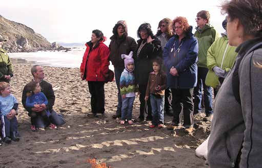
pdf · WordPress blocksimage-10.jpg · 27.8 KB{kind=link}
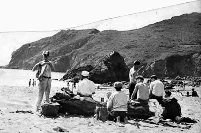
pdf · WordPress blocksimage-12.jpg · 17.9 KB{kind=link}
pdf · WordPress blocksimage-249.jpg · 5.9 KB{kind=link}
pdf · WordPress blocksimage-258.jpg · 90.7 KB{kind=link}
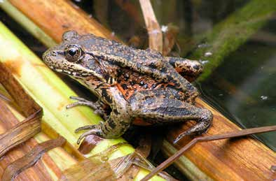
pdf · WordPress blocksimage-260.jpg · 18.5 KB{kind=link}
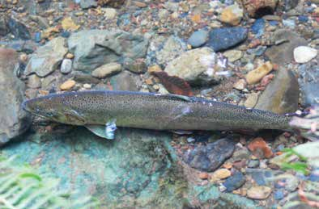
pdf · WordPress blocksimage-262.jpg · 19.0 KB{kind=link}
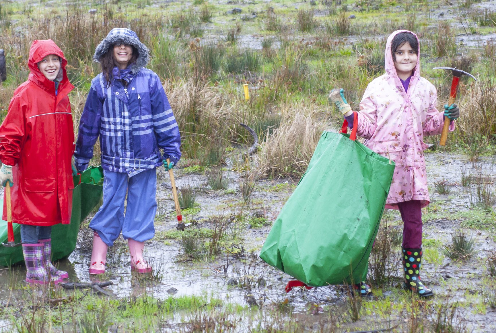
pdf · WordPress blocksimage-268.jpg · 856.9 KB{kind=link}
pdf · WordPress blocksimage-269.jpg · 246.0 KB{kind=link}
pdf · WordPress blocksimage-270.jpg · 180.6 KB{kind=link}
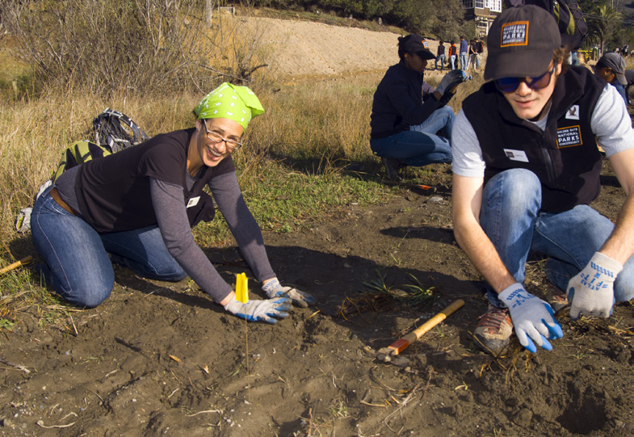
pdf · WordPress blocksimage-271.jpg · 243.9 KB{kind=link}
pdf · WordPress blocksimage-211.jpg · 2.1 KB{kind=link}
pdf · WordPress blocksimage-212.jpg · 1.6 KB{kind=link}
pdf · WordPress blocksimage-213.jpg · 3.5 KB{kind=link}
pdf · WordPress blocksimage-214.jpg · 2.2 KB{kind=link}
pdf · WordPress blocksimage-215.jpg · 2.9 KB{kind=link}
pdf · WordPress blocksimage-220.jpg · 4.1 KB{kind=link}
pdf · WordPress blocksimage-221.jpg · 2.5 KB{kind=link}
pdf · WordPress blocksimage-226.jpg · 1.4 KB{kind=link}
pdf · WordPress blocksimage-228.jpg · 1.1 KB{kind=link}
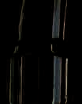
pdf · WordPress blocksimage-230.jpg · 3.2 KB{kind=link}
pdf · WordPress blocksimage-118.jpg · 4.2 KB
pdf · WordPress blocksimage-122.jpg · 4.2 KB
pdf · WordPress blocksimage-194.jpg · 18.8 KB{kind=link}
pdf · WordPress blocksimage-198.jpg · 18.8 KB{kind=link}
pdf · WordPress blocksimage-224.jpg · 8.8 KB
pdf · WordPress blocksimage-228.jpg · 8.8 KB{kind=link}
pdf · WordPress blocksimage-263.jpg · 1.8 KB
pdf · WordPress blocksimage-267.jpg · 1.8 KB
pdf · WordPress blocksimage-273.jpg · 4.9 KB{kind=link}
pdf · WordPress blocksimage-277.jpg · 4.9 KB{kind=link}
epub · WordPress blocksimage.jpg · 9.5 KB{kind=link}
epub · WordPress blocks360840914614224901_a.png · 1.9 KB{kind=link}
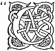
epub · WordPress blocks360840914614224901_c-quote.png · 2.0 KB{kind=link}
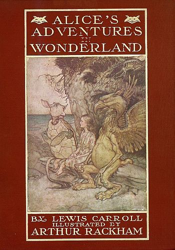
epub · WordPress blocks360840914614224901_cover.jpg · 52.8 KB{kind=link}
epub · WordPress blocks360840914614224901_f.png · 2.0 KB{kind=link}
epub · WordPress blocks360840914614224901_f0002-image.jpg · 41.1 KB{kind=link}
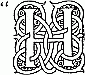
epub · WordPress blocks360840914614224901_h-quote.png · 1.7 KB{kind=link}
epub · WordPress blocks360840914614224901_i.png · 2.0 KB{kind=link}
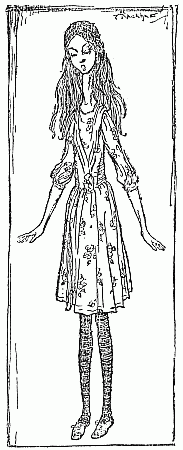
epub · WordPress blocks360840914614224901_p0015-image.png · 13.4 KB{kind=link}
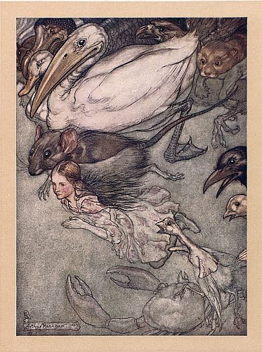
epub · WordPress blocks360840914614224901_p0022-insert2.jpg · 67.9 KB{kind=link}
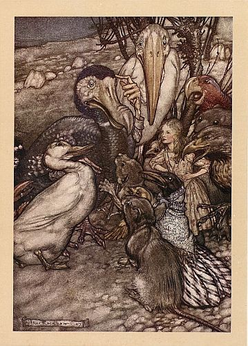
epub · WordPress blocks360840914614224901_p0028-insert2.jpg · 67.7 KB{kind=link}
docx · WordPress blocksimage1.jpg · 1.7 KB{kind=link}
docx · WordPress blocksimage2.jpg · 1.3 KB{kind=link}
pptx · WordPress blocksimage1.png · 32.0 KB{kind=link}
pptx · WordPress blocksimage10.png · 57.7 KB{kind=link}
pptx · WordPress blocksimage11.jpeg · 9.8 KB{kind=link}
pptx · WordPress blocksimage2.png · 4.9 KB{kind=link}
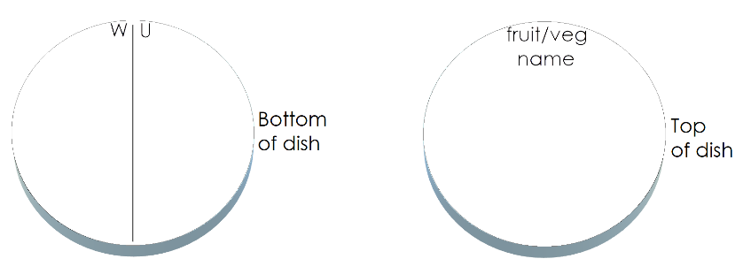
pptx · WordPress blocksimage26.png · 22.2 KB{kind=link}
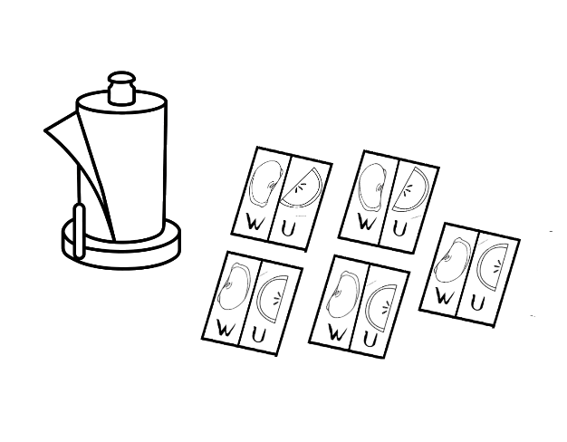
pptx · WordPress blocksimage27.png · 59.6 KB{kind=link}
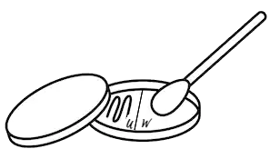
pptx · WordPress blocksimage28.png · 18.1 KB{kind=link}
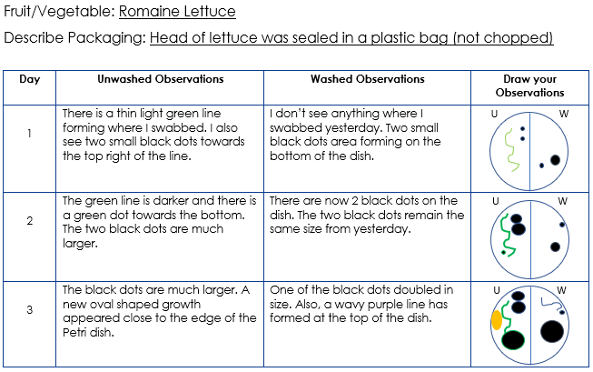
pptx · WordPress blocksimage29.png · 46.2 KB{kind=link}
pptx · WordPress blocksimage3.png · 14.5 KB{kind=link}
pptx · WordPress blocksimage30.jpeg · 143.8 KB{kind=link}
odt · WordPress blocks100000000000009A000000914DD412D78D619E56.png · 1.1 KB{kind=link}
odt · WordPress blocks100000000000009A000000A059773B4C62FA218F.png · 1.2 KB{kind=link}
odt · WordPress blocks100000000000009A000000A060B95E7C1823CB80.png · 1.2 KB{kind=link}
odt · WordPress blocks100000000000009A000000A09F8D783526AADC53.png · 1.2 KB{kind=link}
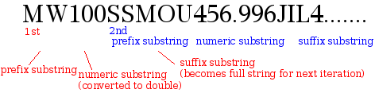
odt · WordPress blocks10000000000001D800000075EA638B5EFC5F39F7.png · 10.8 KB{kind=link}
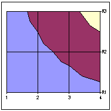
odt · WordPress blocks10000200000000BD000000BD1617CD982F08C512.gif · 2.6 KB{kind=link}
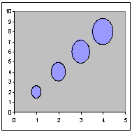
odt · WordPress blocks10000200000000BD000000BD694AAF88D9B12624.gif · 2.5 KB{kind=link}
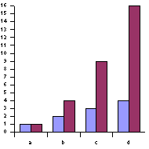
odt · WordPress blocks10000200000000BE000000BE0F10EB0E20C95144.gif · 2.5 KB{kind=link}
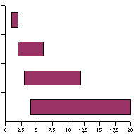
odt · WordPress blocks10000200000000BE000000BE243963DA63B6C335.gif · 2.0 KB{kind=link}
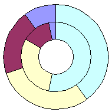
odt · WordPress blocks10000200000000BE000000BE356159C40D964AAC.gif · 2.9 KB{kind=link}
docx · WordPress blocksimage1.png · 1.5 KB{kind=link}
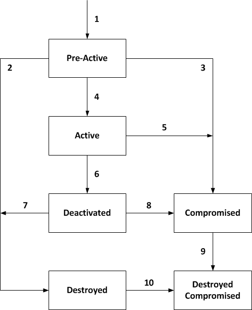
docx · WordPress blocksimage2.png · 16.8 KB{kind=link}
epub · WordPress blockscheck.gif · 1.3 KB{kind=link}
epub · WordPress blockscheck.jpg · 2.6 KB{kind=link}
epub · WordPress blockscheck.png · 2.7 KB{kind=link}
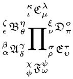
epub · WordPress blocksmultiscripts_and_greek_alphabet.png · 9.8 KB{kind=link}
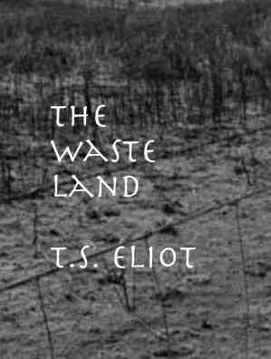
epub · WordPress blockswasteland-cover.jpg · 16.2 KB{kind=link}
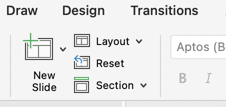
pptx · WordPress blocksimage1.png · 58.7 KB{kind=link}
pptx · WordPress blocksimage2.jpg · 85.2 KB{kind=link}
pptx · WordPress blocksimage3.jpg · 15.2 KB{kind=link}
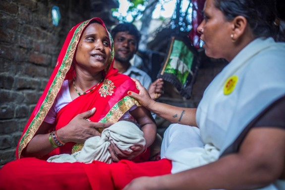
pptx · WordPress blocksimage4.jpg · 57.2 KB{kind=link}
pptx · WordPress blocksimage5.jpg · 54.6 KBSuccess by input format
| Format | Files | Successful conversions | Failures |
|---|---|---|---|
biblatex | 2 | 6/6 | 0 |
bibtex | 2 | 6/6 | 0 |
bits | 2 | 6/6 | 0 |
commonmark | 1 | 3/3 | 0 |
commonmark_x | 1 | 3/3 | 0 |
csljson | 2 | 6/6 | 0 |
csv | 2 | 6/6 | 0 |
doc | 2 | 2/6 | 4 |
docbook | 2 | 6/6 | 0 |
docx | 6 | 18/18 | 0 |
endnotexml | 2 | 6/6 | 0 |
epub | 5 | 15/15 | 0 |
fb2 | 2 | 6/6 | 0 |
gfm | 1 | 3/3 | 0 |
html | 2 | 6/6 | 0 |
ipynb | 2 | 6/6 | 0 |
jats | 2 | 4/6 | 2 |
jira | 2 | 6/6 | 0 |
json | 2 | 6/6 | 0 |
latex | 2 | 5/6 | 1 |
man | 2 | 6/6 | 0 |
markdown | 1 | 3/3 | 0 |
markdown_github | 1 | 3/3 | 0 |
markdown_mmd | 1 | 3/3 | 0 |
markdown_phpextra | 1 | 3/3 | 0 |
markdown_strict | 1 | 3/3 | 0 |
mediawiki | 2 | 6/6 | 0 |
native | 2 | 6/6 | 0 |
odt | 3 | 8/9 | 1 |
opml | 2 | 6/6 | 0 |
pdf | 6 | 12/18 | 6 |
pptx | 4 | 12/12 | 0 |
ris | 2 | 6/6 | 0 |
rtf | 2 | 6/6 | 0 |
tsv | 2 | 6/6 | 0 |
xlsx | 3 | 9/9 | 0 |
xml | 2 | 4/6 | 2 |
WordPress block coverage
The WordPress output generated blocks for 78 samples.
| Block | Count |
|---|---|
code | 615 |
group | 283 |
heading | 4062 |
html | 59 |
image | 199 |
list | 1173 |
paragraph | 15584 |
quote | 54 |
separator | 65 |
table | 544 |
verse | 1 |
Still missing samples
dokuwiki, mdoc, rst